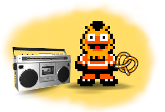
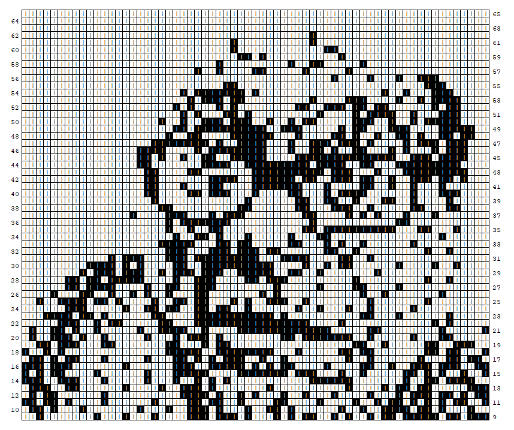

3 Input and Output

Knotty provides a transferable format for publishing and distributing knitting patterns. Designs can be saved in an open source format that is permanently in the public domain, and free tools are provided to convert these files into other media including hand knitting instructions, graphical knitting charts, and Knitspeak files.
Knitspeak files can also be loaded into Knotty, and graphical images can be converted directly into colorwork patterns.
Single-color Knotty patterns can be converted to and from the Knitspeak format used by Stitch Maps.
3.1 Saving and Loading Patterns
Having defined the pattern demo, you can save it by typing the following line into DrRacket:
save demo "demo.xml"
The .xml suffix is conventional for files that use the text-based format XML. Since this is a text file, you can load it into a web browser or text editor and view the data directly.
The data format is defined in a separate file called a schema. The Knotty schema will always be freely available. This means that you truly own your Knotty patterns, and will always be able to use them without restriction.
One useful thing that you can do with a Knotty XML file, not surprisingly, is load it back into Knotty. When you recover the file, a new pattern is created. Let’s call the reloaded pattern my-demo:
define my-demo recover "demo.xml"
3.2 Working with Stitch Maps
Stitch Maps is a fantastic website for editing and viewing lace patterns. You can browse through thousands of existing designs, each with a clever chart that closely resembles a real swatch. You can create your own patterns in a user-friendly format called Knitspeak, which reads just like English-language knitting instructions. It takes just a few minutes to get started, and lot of work has been put into making everything easy to use. I highly recommend taking a look, because it is honestly one of the best knitting websites around.
The major limitation of patterns created in Knitspeak is that colorwork is not possible. That’s where Knotty comes in handy! You can import Knitspeak patterns into Knotty using the "import-ks" command, and add as many different yarns as you like.
"export-ks" converts a Knotty pattern into Knitspeak, so that you can show off your design as one of Stitch Map’s great-looking diagrams. Yarn information is lost in the conversion. And since Knitspeak is geared towards hand knitters, techniques associated with machine knitting are not available.
Although the vast majority of patterns on Stitch Maps can be loaded without any changes, the Knotty flavor of Knitspeak is a little bit more restrictive in terms of what is allowed. For example, Knotty insists that the entire workpiece must either be knit flat, with RS and WS rows that alternate, or circular. This means that short rows are not allowed in circular knitting. In contrast, Stitch Maps allows RS and WS rows to be combined in any order. Also, line numbers in Knotty must start at 1 and form a consecutive sequence, unlike Stitch Maps. Lastly, Knotty does not implement some of the less common stitches such as threaded stitches, wrapped stitches, and gathers.
3.3 Importing Graphics
import-png provides a simple interface to import PNG files. The default settings produce a colorwork pattern for hand knitting.
show import-png "scribblings/danny.png"

3.4 Knotty Application
Another way to convert knitting patterns from one format to another is by using the Knotty application, which is available for Windows and Linux operating systems and can be downloaded from the github repository.
3.4.1 Installation
To install the application, simply decompress the archive and move the resulting folder to the desired filesystem location. The Windows executable is called knotty.exe. The Linux executable is called knotty and is located in the bin subdirectory.
3.4.2 Running the Application
The application is run from the command line from within the Powershell or Command Prompt consoles in Windows, or the Linux terminal. Command line arguments are used to specify the input and output formats. Information on these and other parameters can be obtained using the -h or ╌help option.
Let’s say you have downloaded the zip file onto a computer running Windows and extracted the contents to C:\Users\Tom\Documents\knotty-app. The archive will contain a folder called something like knotty-v0.1-win. (The exact name will depend on which version you have downloaded.) To view the help message, open a Powershell console and type the following:
cd \Users\Tom\Documents\knotty-app\knotty-v0.1-win .\knotty.exe -h
If that works, try using the application to convert the example pattern leaf.xml which you can find in the folder knotty-lib/resources/example of the knotty repository. (The pattern corresponds to the knitting chart on this webpage.)
You will need to select the import format – in this case, option -x for XML – and one or more export formats. So, for example, to convert the pattern into a webpage you will need to type something like the text below. (The exact location will depend on where you cloned the repository.)
.\knotty.exe -xH ..\..\knotty\knotty-lib\resources\example\leaf
(Note that you don’t need to supply the file extension for leaf.xml because it is implied by the -x option.)
Now if you look in the example folder you should see a new file called leaf.html. Open this file in a web browser to view the webpage. You will also find two folders called css and js that contain the associated stylesheets and javascript files, respectively.
3.5 Publishing to Webpages
One of the benefits of HTML output is that you can publish patterns immediately on the internet. Another is that the dynamic qualities of HTML also make for an interactive chart. Hover the mouse over a stitch symbol and the knitting instructions appear. Use the slider to zoom in and out, and the scrollbars to move the position of the chart. Click the heading marked "Instructions" and written knitting pattern will appear.
If you are familiar with CSS, you can give the pages a personal touch by editing the stylesheets that come with the web pages. If, for example, you prefer the Stitchmastery Dot font to Stitchmastery Dash, it takes just a few moments to make the change. In a similar way, you can tweak the appearance so that the colors, font, and layout match your preferences.